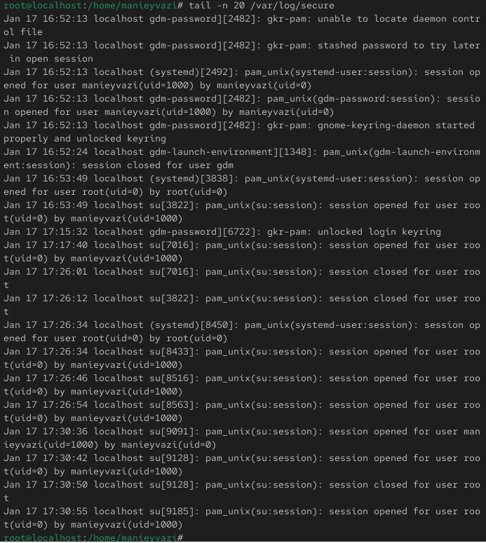
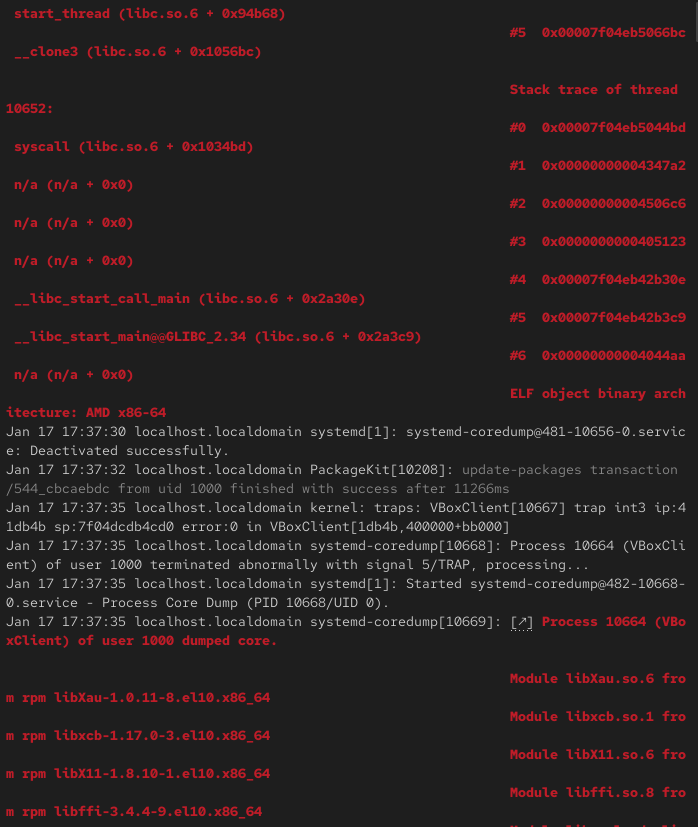
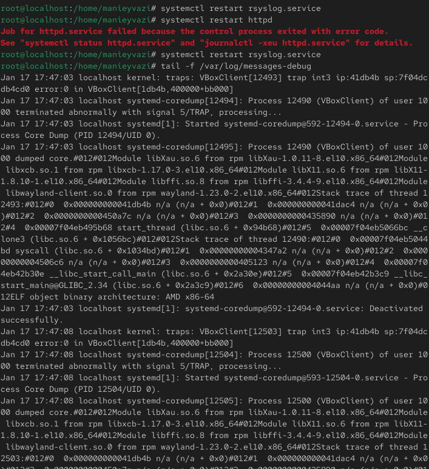
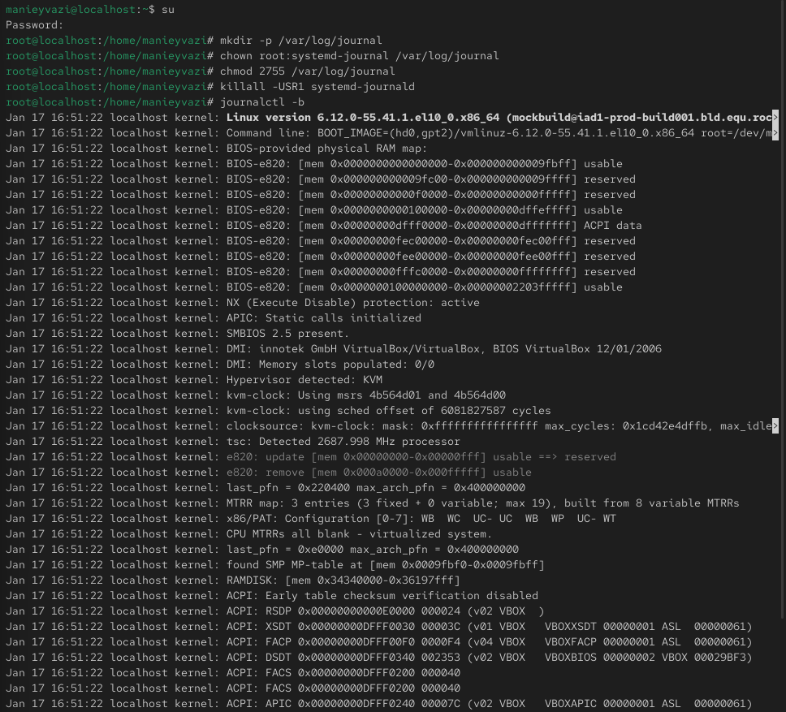
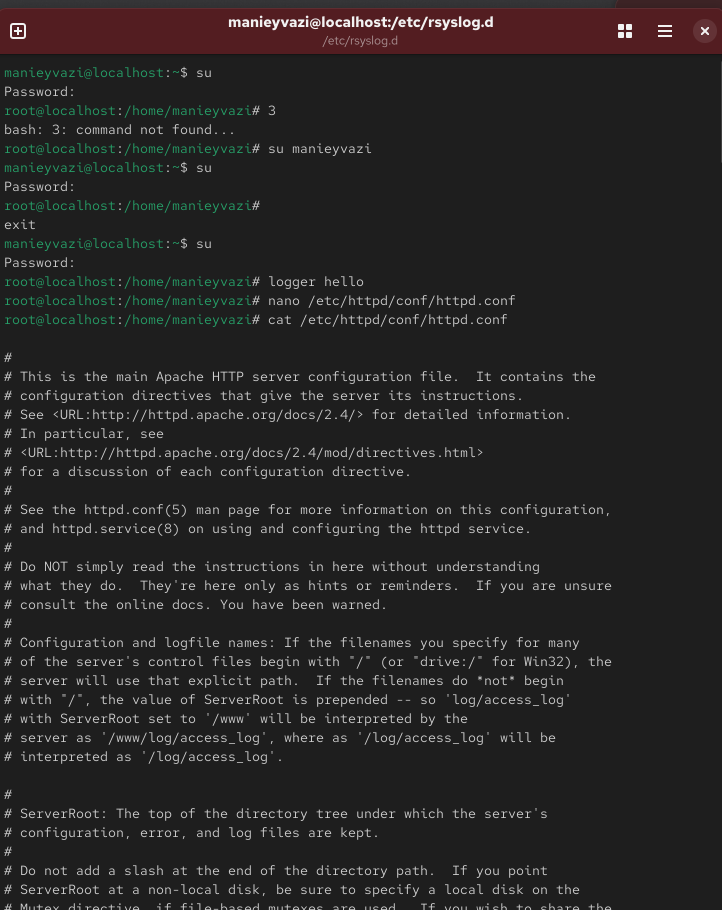
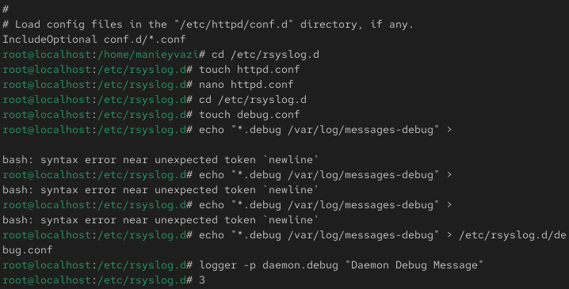
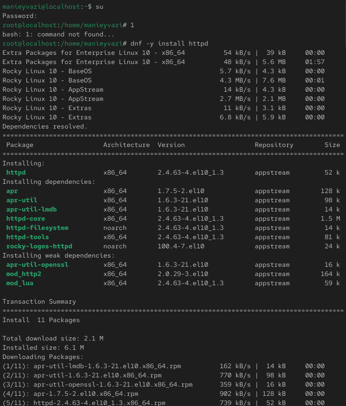

Получить навыки работы с журналами мониторинга различных событий в системе Linux, используя службы rsyslog и systemd-journald.

Рис. 1 — Мониторинг /var/log/messages в реальном времени
-.

Рис. 2 — Сообщения об ошибках su в журнале

Рис. 3 — Добавление пользовательского сообщения в журнал
-.

Рис. 4 — Просмотр последних записей журнала secure
-.

Рис. 5 — Запуск службы httpd и её журнал
-.
Рис. 6 — Изменение конфигурации httpd.conf
-.

Рис. 7 — Файл /etc/rsyslog.d/httpd.conf
-.

Рис. 8 — Файл /etc/rsyslog.d/debug.conf

Рис. 9 — Сообщение от logger в messages-debug

Рис. 10 — Просмотр системного журнала
В ходе лабораторной работы были изучены принципы системного журналирования в Linux. Были рассмотрены возможности служб rsyslog и systemd-journald, настройка пользовательских правил, регистрация ошибок и отладочной информации. Освоены команды фильтрации и анализа логов с помощью journalctl, а также способы организации постоянного хранения журналов для долгосрочного мониторинга системы.